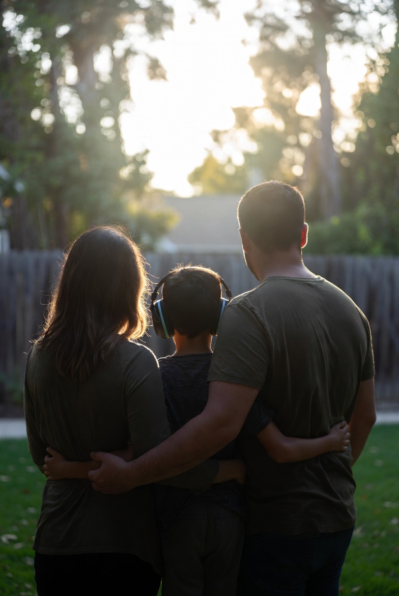

“We stopped scoring points.”
After years of sleepless nights and specialist schedules, we started keeping score about who sacrificed more. Coaching helped us name fear without attacking character.
Elena M., San Antonio
Every name here reflects a real kind of courage—and a real need for connection. When you share stories publicly, use the permissions and labels each family prefers, including initials or anonymity.
After years of sleepless nights and specialist schedules, we started keeping score about who sacrificed more. Coaching helped us name fear without attacking character.
Elena M., San Antonio
We didn’t need a honeymoon—we needed a plan for repair. Our volunteer helped us build a weekly check-in that actually fits our energy levels.
David & Priya K., Austin area
Special needs parenting consumed my identity. Coaching gave language to grief and gratitude at the same time—and my partner met me there.
Tanya S., Fort Worth

“Families don’t need perfection—they need practice. We practice together.”
“I used to think asking for help meant we were broken. Now I believe it means we’re brave.”
Every story begins with access: scholarships for sessions, training for volunteers, and thoughtful match support. You can make that access possible.
Give to LoneStar Support501(c)(3) nonprofit · Tax-deductible where applicable